Transformer
-
GPT
- Generative Pre-trained Transformer
Generative: 새로운 text를 생성하는 모델- Pre-trained
- 방대한 data를 이용해 사전에 학습된 모델
- 이후 특정 task에 맞게 추가 학습 또는 Fine-tuning 가능
- Transformer
- text 등의 sequence를 처리하는 Neural Network 구조
- 현대 LLM의 핵심 구조
-
Transformer는 여러 종류의 model에 사용 가능
- text text
- audio text
- text image 등
-
이 글에서는 ChatGPT와 같은 다음 Token 예측 기반 Transformer를 중심으로 설명
Next Token Prediction
-
LLM의 기본 학습 목표
- 주어진 text를 보고 다음에 나올 Token의 Probability Distribution을 예측
- 가능한 모든 Token 각각에 대해 다음 Token이 될 가능성을 계산
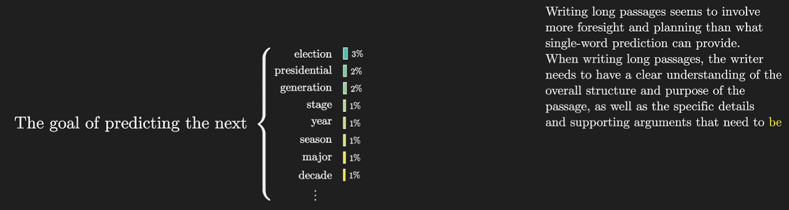
-
text generation
- Seed Text를 입력
- 다음 Token에 대한 Probability Distribution 계산
- Distribution에서 Token 하나를 Sampling
- 선택한 Token을 기존 text 뒤에 추가
- 새 text 전체를 다시 model에 입력
- 위 과정을 반복
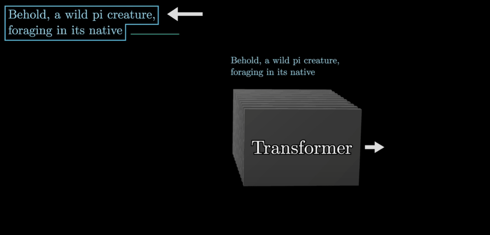
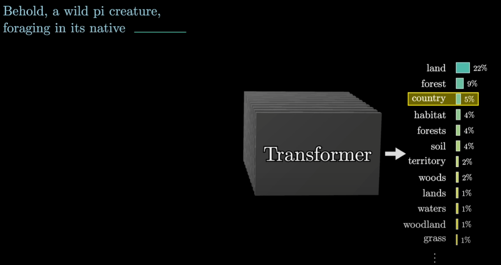
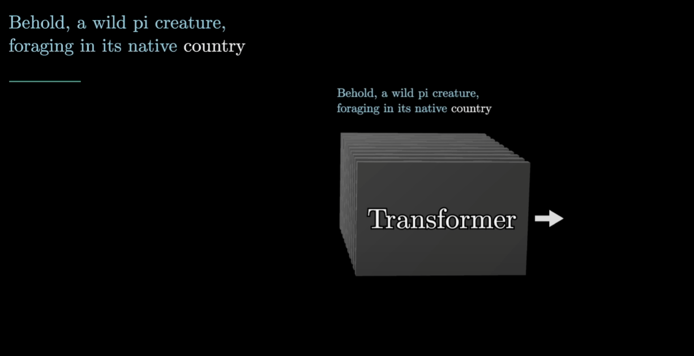
-
즉, LLM의 text generation은 기본적으로 Next Token Prediction을 반복적으로 수행하는 과정
- 한 번에 긴 문장을 통째로 생성하는 것이 아님
- 한 Token씩 생성하여 sequence를 점차 확장
Transformer 전체 흐름
- 내부의 data flow
- Input Text를 Token으로 분리
- 각 Token을 Embedding Vector로 변환
- Vector Sequence를 Attention Block에 통과
- 각 Vector를 Multilayer Perceptron(MLP)에 통과
- Attention과 MLP Block을 여러 번 반복
- 마지막 representation을 Unembedding하여 각 Token의 Logit 계산
- Softmax를 적용해 Probability Distribution 생성
- Distribution에서 다음 Token을 Sampling
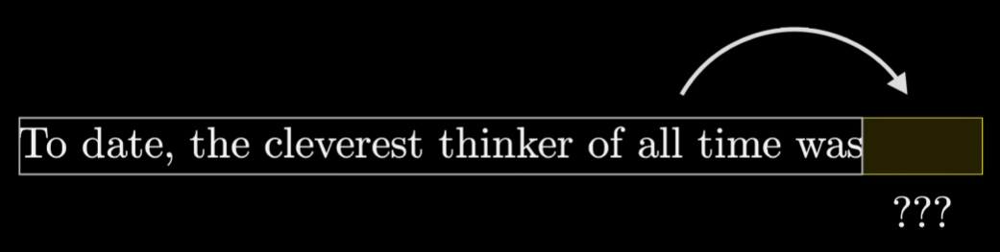
Token
-
Transformer가 input을 처리하는 기본 data 단위
-
text를 그대로 한 문장 단위로 처리하지 않고 작은 조각으로 분할
-
text에서 Token
- 단어 전체
- 단어의 일부
- 문자 조합
- 문장 부호
-
이미지나 소리에서도 유사한 개념 사용 가능
- image : image patch
- audio : 짧은 audio chunk
-
설명의 편의를 위해 이후에는 Token을 단어처럼 생각하지만, 실제 GPT의 Token이 항상 하나의 단어와 대응하는 것은 아님
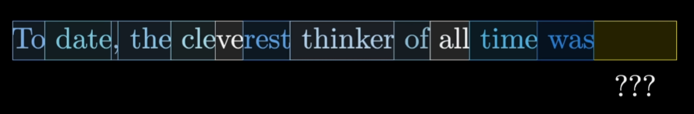
Embedding
-
Token을 고차원의 실수 Vector로 표현하는 방식
-
Token의 의미를 계산 가능한 numerical representation으로 변환
- Transformer는 Token 자체를 바로 계산하지 않음
- 각 Token을 실수로 이루어진 Vector로 변환
-
-
Embedding Vector를 고차원 공간의 한 점으로 생각 가능
- 의미가 비슷한 Token은 가까운 위치에 존재하는 경향
- 특정 방향이 semantic property를 나타낼 수 있음
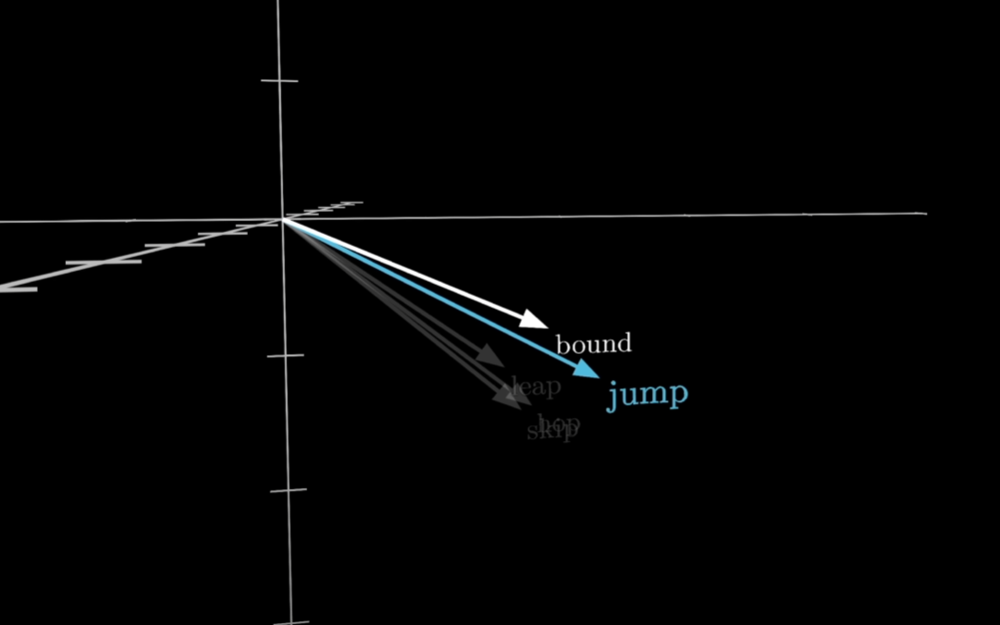
Embedding Matrix
-
Token을 Embedding Vector로 변환하기 위해 Embedding Matrix 사용
-
원문에서는 Embedding Matrix를 로 표현
-
Embedding Matrix
- vocabulary에 존재하는 각 Token에 대응하는 Vector를 저장
- 특정 Token이 입력되면 그 Token에 해당하는 Embedding Vector를 가져옴
- 초기에는 random value로 시작하지만 training을 통해 학습
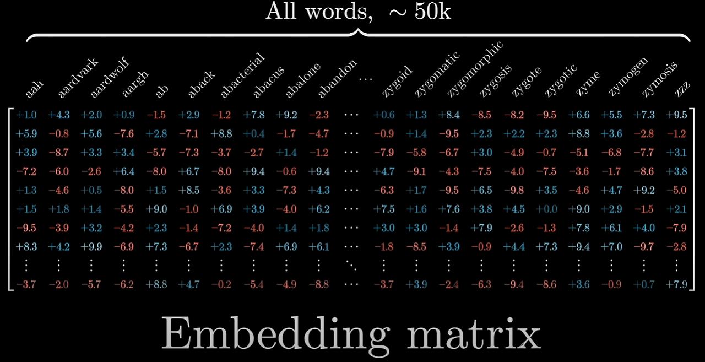
-
GPT-3 예시
- Vocabulary Size :
- Embedding Dimension :
-
따라서 Embedding Matrix의 parameter 수
- 약 6.17억 개의 parameter
Semantic Direction
-
Embedding 공간에서 특정 방향이 의미적인 속성을 나타낼 수 있음
-
대표적인 직관
-
-
의미
- man → woman을 나타내는 방향과
- king → queen을 나타내는 방향이 어느 정도 유사하게 나타날 수 있음
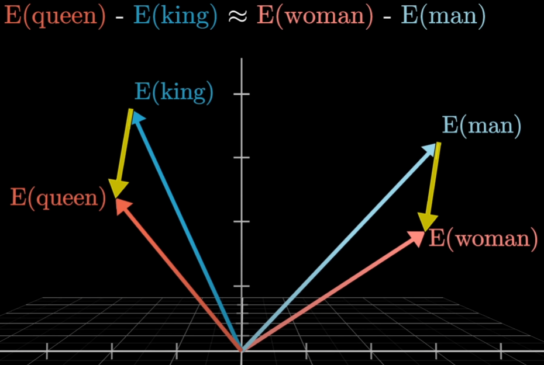
-
이런 관계는 사람이 직접 정의하는 것이 아니라
- training data를 통해 Embedding Matrix의 parameter가 조정되는 과정에서 형성
-
다만 실제 Embedding은 단순한 하나의 의미 축만으로 설명되지 않음
- 한 단어는 여러 의미와 문맥에서 사용
- 실제 high-dimensional representation은 훨씬 복잡
Dot Product
-
두 Vector가 얼마나 같은 방향을 향하는지 측정하는 방법으로 해석 가능
-
-
기하학적 의미
-
두 Vector가
- 비슷한 방향 Dot Product가 큰 양수
- 수직 0
- 반대 방향 음수
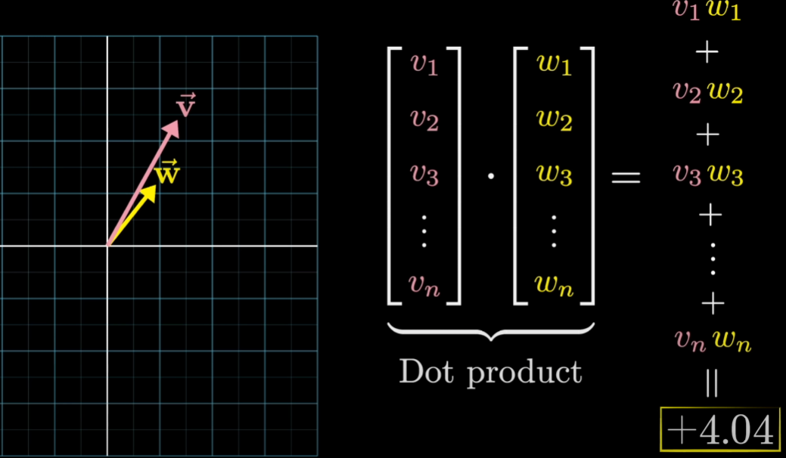
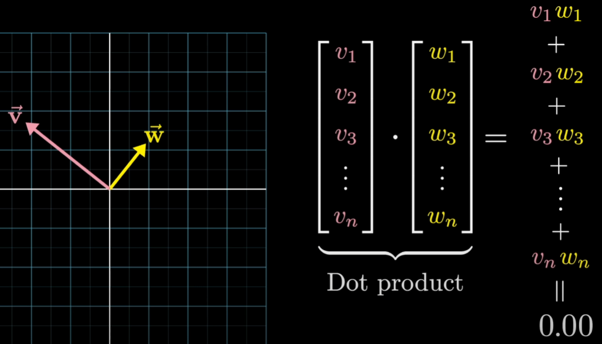
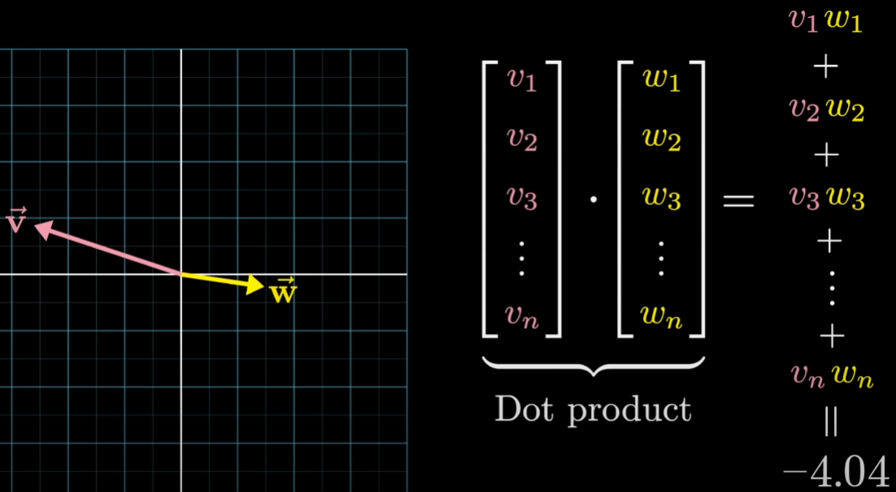
-
Transformer에서는 이러한 Vector 간 관계 계산이 Attention의 핵심 요소로 사용됨
Attention
-
Embedding Vector Sequence는 Attention Block을 통과
-
Attention의 역할
- 각 Token Vector가 다른 Token Vector의 정보를 참고
- 문맥상 어떤 Token이 중요한지 판단
- 해당 정보를 이용해 각 Token의 representation을 update
-
예시
"A machine learning model""A fashion model"- 두 문장에서
model이라는 Token 자체는 같지만 의미는 다름 - 주변 Token에 따라
model의 Vector representation이 다른 방향으로 update되어야 함
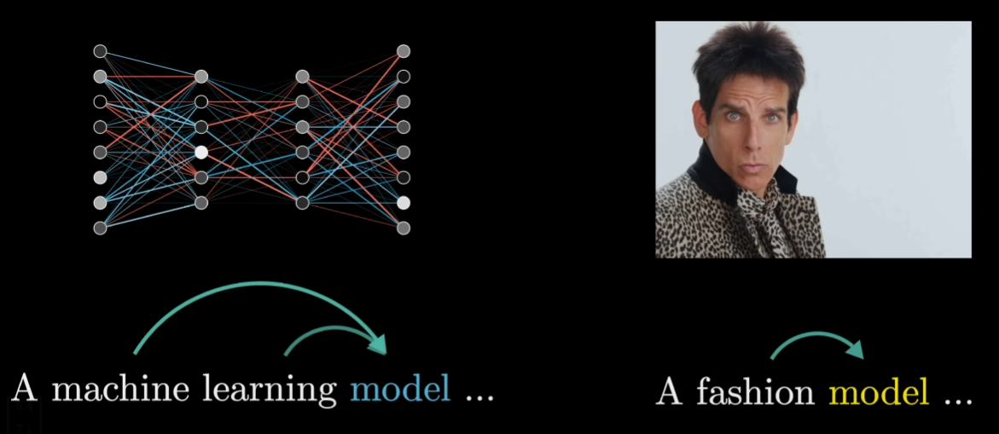
-
즉, 초기 Embedding은 Token 자체의 기본적인 의미만 표현
-
Attention을 반복할수록
- 주변 문맥
- 멀리 떨어진 Token
- 문장 전체의 관계
를 반영한 Contextual Representation으로 변화
Multilayer Perceptron
-
Attention Block 이후 각 Vector는 MLP(Multilayer Perceptron) Block을 통과
- Transformer 문맥에서는
Feed-Forward Network라고도 부름
- Transformer 문맥에서는
-
Attention과 차이
- Attention
- Token Vector들이 서로 정보를 주고받음
- MLP
- 각 Token Vector에 동일한 Neural Network를 독립적으로 적용
- Token끼리 직접 상호작용하지 않음
- 각 Token 위치에 대해 병렬 연산 가능
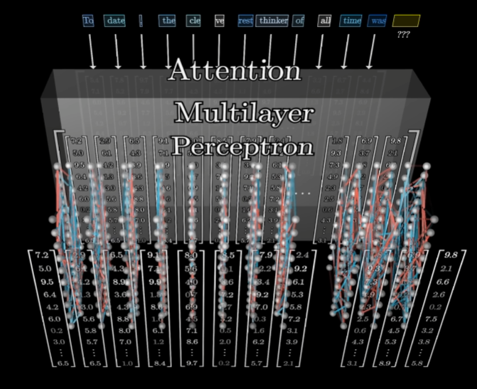
- Attention
Transformer Block의 반복
-
Transformer는 Attention과 MLP를 한 번만 적용하지 않음
-
여러 layer에서 반복
-
-
반복될수록 각 Token Vector에 더 풍부한 context information이 반영
-
처음
- 단순히 Token 자체를 나타내는 Vector
-
이후
- 문맥을 반영한 구체적인 의미를 나타내는 Vector
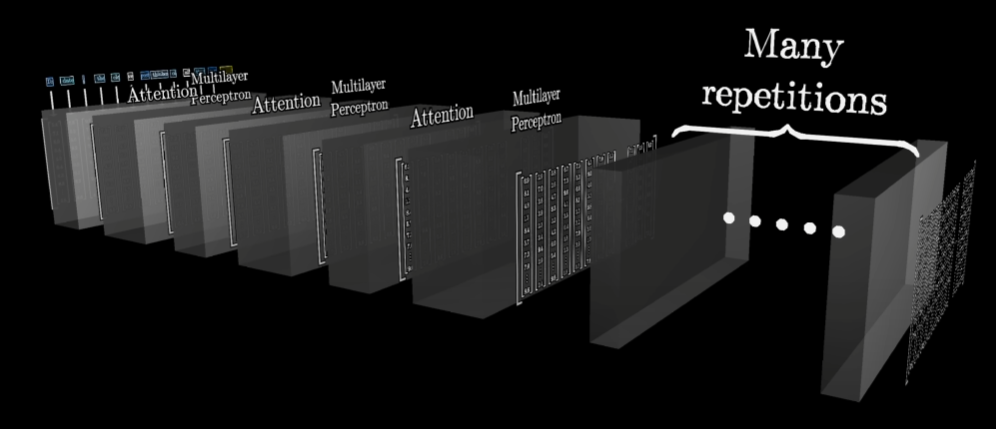
-
Weight와 Data
- Transformer를 이해할 때 다음 둘을 구분해야 함
-
Weight- Training을 통해 학습된 parameter
- Model이 어떻게 행동할지를 결정
- 여러 Matrix 내부의 값으로 저장
-
Data / Activation- 현재 model이 처리하고 있는 특정 input
- Token Embedding 및 layer를 통과하면서 변화하는 Vector
- Weight는 model에 저장된 학습 결과
- Activation은 현재 입력에 따라 매번 달라지는 값
Deep Learning과 Matrix Multiplication
-
Deep Learning Model의 input과 intermediate representation은 모두 실수 배열로 표현
- Vector
- Matrix
- Tensor
-
Tensor
- 다차원 실수 배열
-
Transformer 내부 연산
- Matrix Multiplication
- Weighted Sum
- Non-linear Function
-
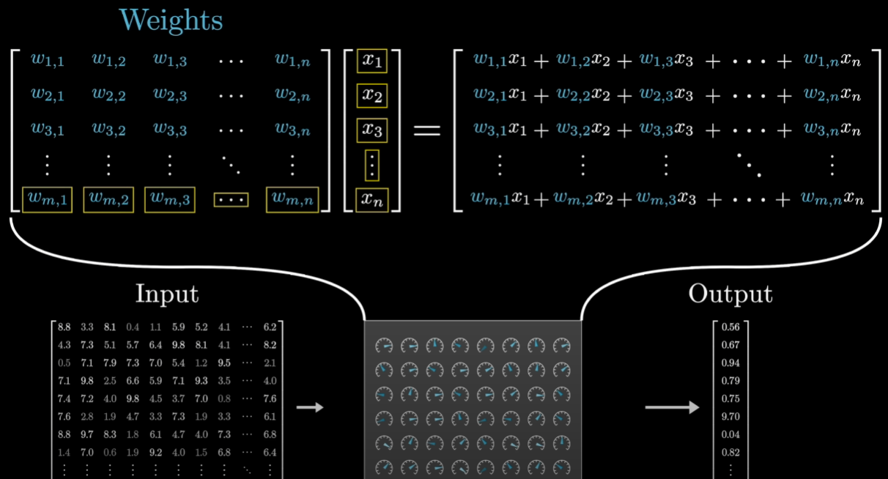
Context Size
-
Transformer는 한 번에 무한한 길이의 Token Sequence를 처리하지 못함
-
한 번에 처리 가능한 최대 Token 수를
Context Size또는Context Window라고 함 -
GPT-3 예시
- Context Size :
- Embedding Dimension :
-
따라서 각 layer가 처리하는 activation은 개념적으로
- 크기의 Vector Sequence로 생각할 수 있음
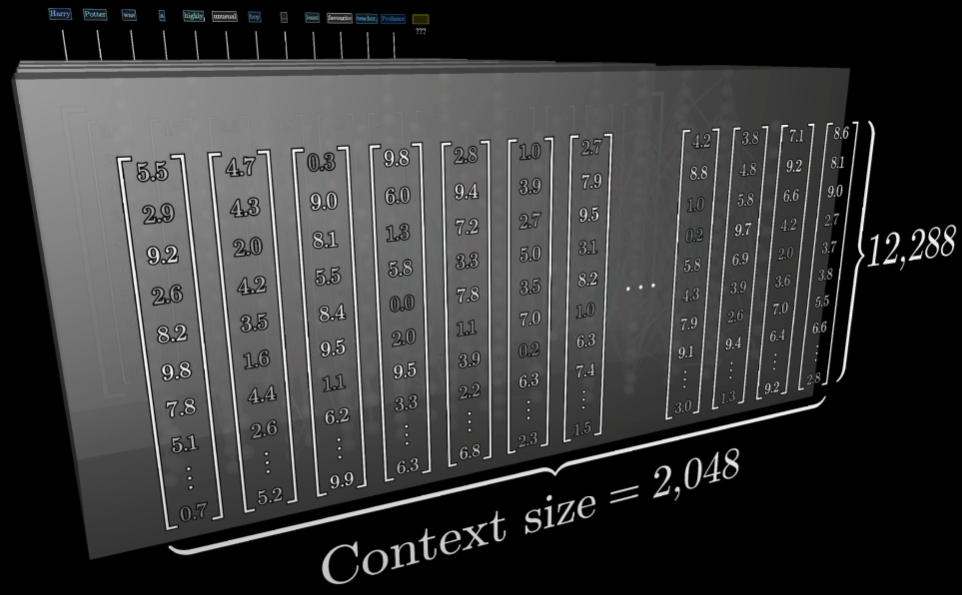
-
Context Size는 model이 다음 Token을 예측할 때 참고할 수 있는 입력 범위를 제한
Contextual Embedding
-
Transformer 내부에서 Vector는 처음의 Word Embedding 상태에 머물지 않음
-
Attention과 MLP를 반복하면서 Token Vector가 이동
-
예시
- 처음의
"king"Vector- 일반적인
king이라는 개념을 표현
- 일반적인
- 문맥을 처리한 이후
- 특정 인물
- 특정 작품
- 특정 사건
- 주변 문장과의 관계
등 더 구체적인 정보를 반영
- 처음의
-
따라서 Transformer 내부의 Vector는 단순한
Word Embedding보다는- Token의 의미
- 위치
- 주변 context
를 포함하는 contextual representation으로 보는 것이 적절
Unembedding
-
Transformer의 마지막에서는 Vector를 다시 vocabulary 전체에 대한 값으로 변환해야 함
-
이를 위해 Unembedding Matrix 사용
- 원문에서는 로 표현
-
- : 최종 Transformer representation
- : Unembedding Matrix
- : Vocabulary의 각 Token에 대응하는 raw score
-
GPT-3 예시
- Vocabulary Size :
- Hidden Dimension :
-
따라서 단순 계산상 Unembedding Matrix도 약개의 parameter 규모
Logit
-
Softmax를 적용하기 전 model이 출력한 raw score
-
Probability가 아님
-
음수나 1보다 큰 값도 가능
-
다음 Token Prediction 과정
Softmax
| 참고 : Softmax
-
Logit을 실제 Probability Distribution으로 변환하는 함수
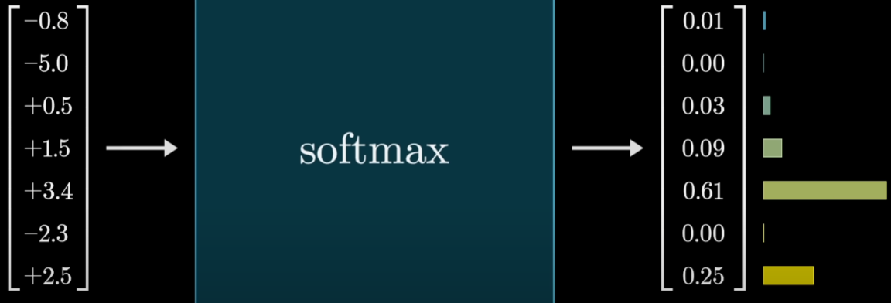
-
과정
- 각 Logit에 exponential 적용
- 모든 값을 더함
- 각 값을 전체 합으로 나눔
-
큰 Logit일수록 높은 Probability
-
작은 Logit일수록 낮은 Probability
Sampling
-
Softmax 결과에서 가장 높은 Probability의 Token을 항상 선택해야 하는 것은 아님
-
Probability Distribution을 이용해 Sampling 가능
-
예시
-
-
-
-
여러 번 Sampling하면 Token A가 가장 자주 선택되지만 B, C도 선택 가능
-
이를 통해 text generation에 다양성을 부여
-
Temperature
-
Sampling의 randomness를 조절하기 위해 Temperature 사용 가능
-
- : Temperature
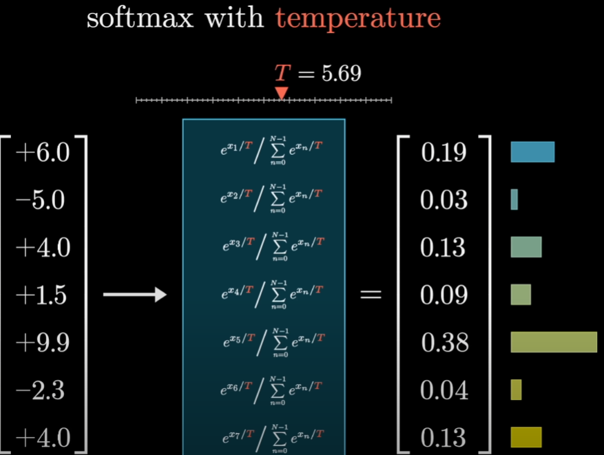
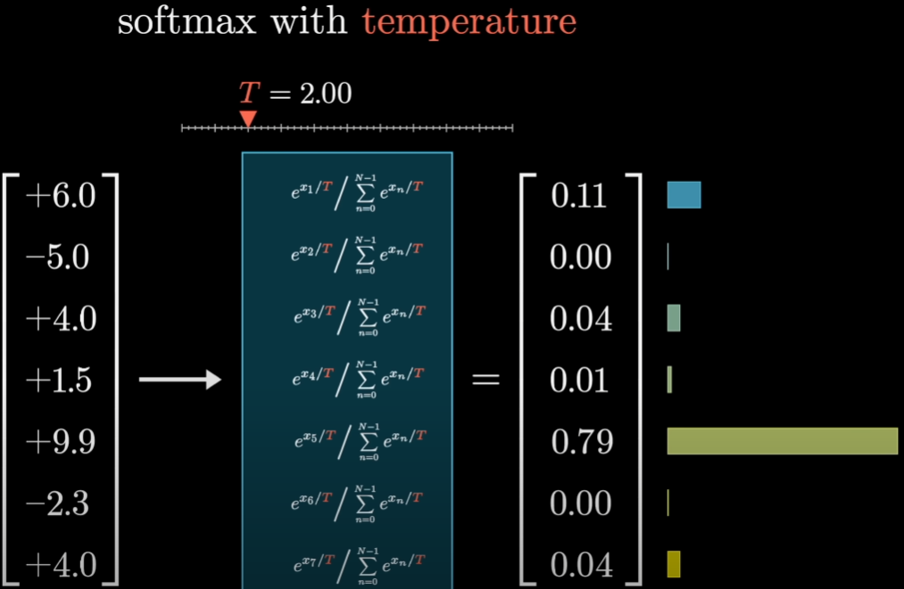
-
가 낮음
- 높은 Logit이 더 강하게 강조
- Probability Distribution이 뾰족해짐
- 더 deterministic한 output
-
가 높음
- 낮은 Logit에도 더 많은 Probability 할당
- Distribution이 평평해짐
- 더 다양한 output을 생성할 가능성 증가
-
직관
-
단, Temperature를 높이면 덜 가능성 있는 Token의 선택 확률도 증가하므로 text가 불안정해질 수 있음
Training 관점의 Transformer
-
Machine Learning의 기본 아이디어
- 사람이 모든 규칙을 직접 programming하지 않음
- 조절 가능한 parameter를 가진 model을 정의
- 많은 training data를 보여주며 parameter를 자동으로 조정
-
단순한 Linear Regression
- parameter : slope, intercept
-
Transformer
- 수십억~수천억 개의 parameter
-
GPT-3
- 약 175 billion parameters
- 많은 parameter가 여러 종류의 Matrix에 포함
-
핵심
- Model Architecture는 사람이 설계
- 개별 Weight 값은 Training을 통해 학습